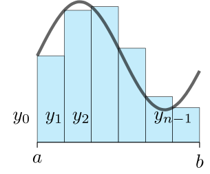

BAB 3 : INTEGRASI TAK WAJAR DAN INTEGRASI
3.1 Integrasi Numerik
A) Rangkuman Materi
1 Hampiran Jumlah Riemann
|
a. Hampiran Titik Ujung Kiri \(\int_a^b f(x) dx \approx (\frac{b-a}{n})[y_0 + y_1 + ... + y_{n-1}]\) |
b. Hampiran Titik Ujung Kanan .svg)
\(\int_a^b f(x) dx \approx (\frac{b-a}{n})[y_0 + y_1 + ... + y_{n}]\) |
c. Hampiran Titik Tengah .svg)
\(\int_a^b f(x) dx \approx (\frac{b-a}{n})[y*_1 + y*_2 + ... + y*_{n}]\) dengan \(y*_i = f(\frac{x_{i-1} + x_i}{2})\) |
2 Hampiran Trapezoidal
.svg)
\(\int_a^b f(x) dx \approx \frac{(b-a)}{2n}[y_0 + 2y_1 + 2y_2 + ... + 2y_{n-1} + y_n]\)
\(\int_a^b f(x) dx \approx \frac{(b-a)}{2}[f(a) + f(b)]\)
3 Perbandingan Titik Tengah dan Trapezoidal
|
1. Galat Hasil Hampiran Titik Tengah \(E_M = \int_a^b f(x) dx - M_n,\) dengan \(M_n\) adalah hasil hampiran titik tengah |
2. Galat Hasil Hampiran Trapezoidal br
\(E_T = \int_a^b f(x) dx - T_n,\) dengan \(T_n\) adalah hasil hampiran trapezoidal. |
4 Aturan Simpson
.svg)
\(\int_a^b f(x) dx \approx \frac{(b-a)}{3n}[y_0 + 4y*_1 + 2y_2 + 4y*_3 + ... + 2y_{n-2} + 4y*_{n-1} + y_n]\)
Galat hampiran Simpson adalah\(E_S = \int_a^b f(x) dx - S_n,\)
dengan \(S_n\) adalah hasil hampiran Simpson.B) Contoh Soal
1. Tentukan nilai integran menggunakan hampiran integral dengan aturan trapezoidal \( n = 6\) pada integral
\(\int_1^4 x^2 dx\)
(Catatan : Tuliskan setiap desimal ke dalam bentuk tiga angka di belakang koma, tanpa dibulatkan)
Pembahasan:
.svg)
h = \(\frac{b-a}{n} = \frac{4-1}{6} = \frac{1}{2}\)
\(\frac{b-a}{2n} = \frac{4-1}{2 \cdot 6} = \frac{1}{4}\)
| i | Titik Ujung x_i | x^2 | Pengali w_i | w_i y_y |
|---|---|---|---|---|
| 0 | 1 | 1 | 1 | 1 |
| 1 | 1.5 | 2.25 | 2 | 4.5 |
| 2 | 2 | 4 | 2 | 8 |
| 3 | 2.5 | 6.25 | 2 | 12.5 |
| 4 | 3 | 9 | 2 | 18 |
| 5 | 3.5 | 12.25 | 2 | 24.5 |
| 6 | 4 | 16 | 1 | 16 |
| Total | 50 | 84.5 |
\(\int_1^4 x^2 dx \approx \frac{1}{4} \cdot 84.5 = 21.125\)
Jadi nilai integralnya adalah 21.1252. Gunakan n = 10 untuk menghampiri nilai integral \(\int_0^3 \sqrt{x+1}dx\) dengan aturan Simpson. Dapatkan nilai eksak integral dan hampiri besar galatnya.
Pembahasan:
.svg)
| i | x_i | f(x_i) | w_i | w_i f(x_i) |
|---|---|---|---|---|
| 0 | 0 | 1 | 1 | 1 |
| 1 | 0.3 | 1.144 | 2 | 2.289 |
| 2 | 0.6 | 1.225 | 4 | 4.9 |
| 3 | 0.9 | 1.346 | 2 | 2.692 |
| 4 | 1.2 | 1.414 | 4 | 5.656 |
| 5 | 1.5 | 1.581 | 2 | 3.162 |
| 6 | 1.8 | 1.802 | 4 | 7.208 |
| 7 | 2.1 | 1.732 | 2 | 3.464 |
| 8 | 2.4 | 1.549 | 4 | 6.196 |
| 9 | 2.7 | 1.414 | 2 | 2.828 |
| 10 | 3 | 1.732 | 1 | 1.732 |
| Total | 16.5 | 42.456 |
\(\int_0^3 \sqrt{x+1}dx \approx \frac{3}{30} \cdot 42.456 = 4.2456\)
Nilai eksak integralnya adalah \(\int_0^3 \sqrt{x+1}dx = \frac{2}{3}(x+1)^{\frac{3}{2}}|_0^3 = \frac{2}{3}(4\sqrt{4}-1) = \frac{2}{3}(8-1) = \frac{14}{3} = 4.6667\)
Jadi besar galatnya adalahGalat = \(|4.6667 - 4.2456| = 0.4211\)
References
L. Williams. Tikz snippets. https://www.integral-domain.org/lwilliams/Resources/tikzsnippets.php, n.d. Accessed: 2025-06-21© Copyright 2025 | KP Mahasiswa Matematika 2022